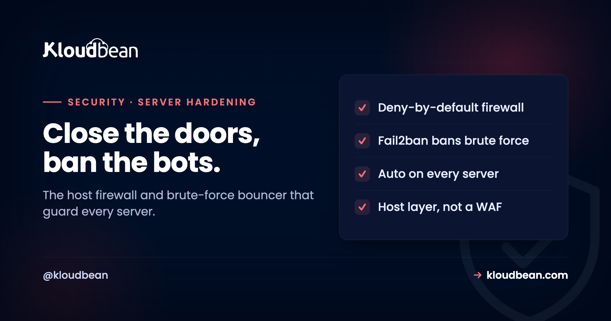

Fail2ban and Shorewall: The Two Tools Quietly Guarding Your Server

Put a brand-new server on a public IP and watch the logs. Within minutes, before you have told a single person it exists, strangers are trying to log in. Bots sweep the entire internet around the clock, guessing passwords on port 22 and knocking on every port you left open. It is relentless, it is automated, and it is aimed at every server, not just yours. Two humble tools handle most of it: Shorewall, which decides what can reach the server at all, and Fail2ban, which bans the ones hammering the doors you have to keep open. They are not exciting. They are the seatbelt of server security, and on Kloudbean they are fastened by default.
Shorewall is a host firewall: it configures the Linux netfilter/iptables layer to block everything by default and allow only the ports your services actually need, so most of the internet's probing hits a closed door. Fail2ban is a brute-force bouncer: it watches logs like the SSH auth log, and when an IP racks up failed logins, it bans that IP temporarily by adding a firewall rule. Together they cut the constant automated attacks that hit every public server. They work at the host and network layer, which is different from a WAF (application layer) and from DDoS protection (volumetric, at the edge). On Kloudbean both are part of the baseline hardening, set up automatically, so you get this floor of protection without configuring anything.
The attack you never see
Most people picture an attacker as a person targeting them. The reality is far more boring and far more constant.
The moment a server has a public IP, automated bots begin probing it. They scan for open ports, look for known services, and above all they try to brute-force SSH: thousands of login attempts using common usernames like root and admin and a dictionary of passwords. If you have ever run grep "Failed password" /var/log/auth.log on an unprotected box, you have seen it: page after page of failed logins from IP addresses all over the world, none of whom have ever heard of you. This is background radiation on the internet. It does not stop, and it does not need a reason to target you. You are a public IP, and that is enough.
That constant pressure is why the baseline matters. You are not deciding whether to defend against a hypothetical attacker. You are deciding whether to leave the door open to a flood that is already arriving.
Shorewall: decide what can reach the server
The first move in server security is not clever. It is closing doors.
Shorewall is a high-level configuration tool for the Linux firewall (netfilter, the thing iptables talks to). Rather than hand-writing cryptic firewall rules, you describe your intent in readable config: which zones exist, what the default policy is, and which specific traffic is allowed through. The sane posture, and the one you want, is deny-by-default on inbound traffic: block everything, then open only the ports your services genuinely need, such as 80 and 443 for web traffic and a locked-down SSH port for administration.
The effect is simple and powerful. Every port you are not using is simply closed, so the internet's endless scanning finds nothing to talk to. A closed port cannot be brute-forced, cannot be exploited, and does not even reveal that a service exists. Most of the noise from the previous section never reaches an application at all, because the firewall answered first. This is the single highest-leverage thing you can do to a server, and it is why it comes first.
Fail2ban: ban the ones knocking too hard
A firewall closes the doors you do not use. But some doors have to stay open, and SSH is the obvious one. That is where Fail2ban earns its keep.
Fail2ban is a small daemon that reads log files and acts on patterns. You point it at a service's log (the SSH auth log is the classic), and you set a rule: if an IP fails to authenticate more than a handful of times within a short window, ban it. The ban is enforced by adding a temporary firewall rule that drops that IP's traffic, and after a set time the ban lifts. In Fail2ban's language these are "jails," each with a maxretry (how many failures are allowed), a findtime (the window they are counted in), and a bantime (how long the ban lasts).
The result is that a bot which starts guessing SSH passwords gets a few attempts and then hits a wall, silently, for minutes or hours. Multiply that across every attacker and the brute-force problem largely evaporates: nobody gets enough attempts to succeed. Fail2ban does not replace strong authentication, it buys it time and quiet, and it turns a screaming auth log into a calm one.
How they work together
The two are a natural pair, and understanding the handoff is the whole mental model.
Shorewall handles the structural question: which doors exist at all. It closes every port you are not using, so the attack surface shrinks to the few services you deliberately expose. Fail2ban handles the behavioural question on those remaining open doors: who is abusing them. It watches the services that must be reachable, notices the ones knocking too hard, and tells the firewall to slam the door on that specific IP for a while. One reduces the number of targets; the other polices the targets that remain. Neither is enough alone, and together they remove the overwhelming majority of the automated pressure every server faces.
Where they fit, and where they don't
This is the part that keeps you from a false sense of security, so read it carefully.
Fail2ban and Shorewall operate at the host and network layer. They are brilliant at their jobs and useless outside them, and knowing the boundary is what makes them useful rather than a comfort blanket. A host firewall does not understand HTTP, so it cannot tell a SQL-injection attempt from a normal request to your app; that is a job for a web application firewall, which works at the application layer. Neither tool absorbs a large volumetric flood; a serious DDoS attack is filtered at the edge, upstream of your server, long before Fail2ban could react. And none of this substitutes for the basics: keeping the OS patched, using SSH keys with password login disabled, and running services with least privilege. Think of Fail2ban and Shorewall as the floor of your security, not the ceiling. They belong in a stack with the other layers, as the diagram shows, not as a replacement for any of them.
Where Kloudbean fits, honestly
Here is the practical payoff. On Kloudbean, Shorewall and Fail2ban are part of the baseline server hardening, configured automatically. You do not hand-write firewall zones or tune Fail2ban jails to get the floor of protection this article describes; a new server arrives with the doors already closed to what it does not need and the brute-force bouncer already watching. Free auto-renewing SSL comes with it, and the platform keeps the underlying OS patched, which is the other half of a hardened host.
The honest boundary: the platform hardens the server, the firewall, the brute-force banning, patching, and TLS. It does not write your application's security, manage your SSH key hygiene for you, or filter application-layer attacks, which is where a WAF and your own code come in. For the application layer and volumetric protection, Cloudflare is available as an add-on. Baseline host hardening is handled; the layers above it are a shared job, and the honest map of who does what is in the secure and compliant hosting guide.
Related reading
This is the host layer of a larger picture. For the application layer, what a WAF actually does; for volumetric attacks, DDoS protection explained; and for the response-header layer, the security headers guide. To restrict who can reach a service by address, IP allowlisting, and to gate a whole app behind a password, the Basic Auth gate guide. The overview that ties it together is secure and compliant hosting.
Start with the doors already closed.
Every Kloudbean server ships with baseline hardening: Shorewall firewall and Fail2ban configured automatically, free auto-renewing SSL, and a patched OS. The floor of server security, without the setup. See how it compares in Kloudbean vs Cloudways, or start at kloudbean.com.
Shorewall + Fail2ban baseline · Free auto-renewing SSL · Patched OS · One dashboard
FAQ
What is the difference between Shorewall and Fail2ban?
Shorewall is a host firewall: it configures the Linux netfilter layer to block traffic by default and allow only the ports you need, so unused doors are closed. Fail2ban is a brute-force bouncer: it watches logs like the SSH auth log and temporarily bans IPs that fail to log in too many times. Shorewall decides what can reach the server at all, and Fail2ban polices the services that must stay open. They complement each other rather than overlap.
Do I still need a WAF if I have Fail2ban and Shorewall?
Yes, because they work at different layers. Shorewall and Fail2ban operate at the host and network layer, blocking ports and banning brute-force IPs, but they do not understand HTTP and cannot recognise application attacks like SQL injection or cross-site scripting. A web application firewall inspects the actual requests to your app and blocks malicious ones. They are complementary layers, so a complete setup uses both rather than choosing one.
Will Fail2ban stop a DDoS attack?
No. Fail2ban bans individual IPs that show abuse patterns in logs, which is effective against brute-force attempts but not against a large volumetric flood from many sources. A serious DDoS is filtered at the edge, upstream of your server, before it reaches the host at all. Fail2ban is a host-level tool, so treat DDoS protection as a separate, edge-level layer rather than something Fail2ban handles.
Does a host firewall slow down my server?
Not meaningfully. A deny-by-default firewall like Shorewall adds negligible overhead for normal traffic, and the security benefit is large: closed ports cannot be scanned, brute-forced, or exploited. The performance cost of firewalling is trivial next to the cost of an unprotected service being compromised, so there is no practical reason to run a public server without one.
Are Fail2ban and Shorewall enough on their own?
They are the floor, not the ceiling. They remove most of the constant automated attack pressure at the host layer, but they do not replace keeping the OS patched, disabling SSH password login in favour of keys, running with least privilege, a WAF at the application layer, or DDoS protection at the edge. Think of them as an essential baseline that other layers build on, not a complete security strategy by themselves.
Do I have to configure Fail2ban and Shorewall myself on Kloudbean?
No. Both are part of Kloudbean's baseline server hardening and are configured automatically, so a new server arrives with unused ports closed and brute-force banning already watching. Free auto-renewing SSL is included and the OS is kept patched. You get this floor of protection without hand-writing firewall zones or tuning Fail2ban jails, though you still own your application's own security.
What does Fail2ban actually do when it bans an IP?
It adds a temporary firewall rule that drops traffic from that IP, then removes the rule after a set period. You control the behaviour per service through jails, with a maximum number of retries, the time window failures are counted in, and how long the ban lasts. The ban is silent from the attacker's perspective, which is part of why it is effective: the bot simply stops getting responses.
Is disabling SSH password login still necessary with Fail2ban?
Yes, and it is one of the highest-value steps you can take. Fail2ban slows brute-force attempts dramatically, but using SSH keys and disabling password authentication entirely removes the attack altogether, because there is no password to guess. Fail2ban then acts as a strong second layer that quiets the logs and bans persistent probers. Use both: keys first, Fail2ban as reinforcement.